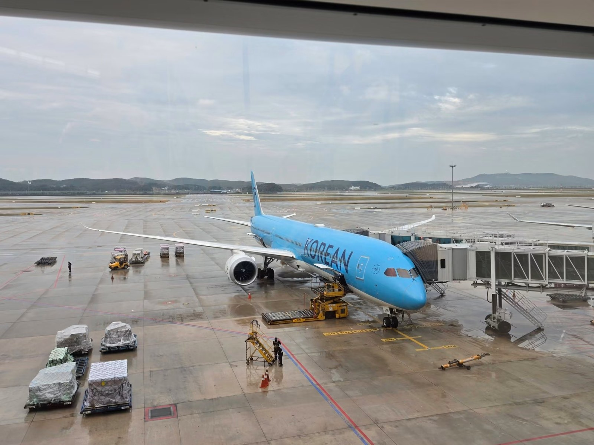
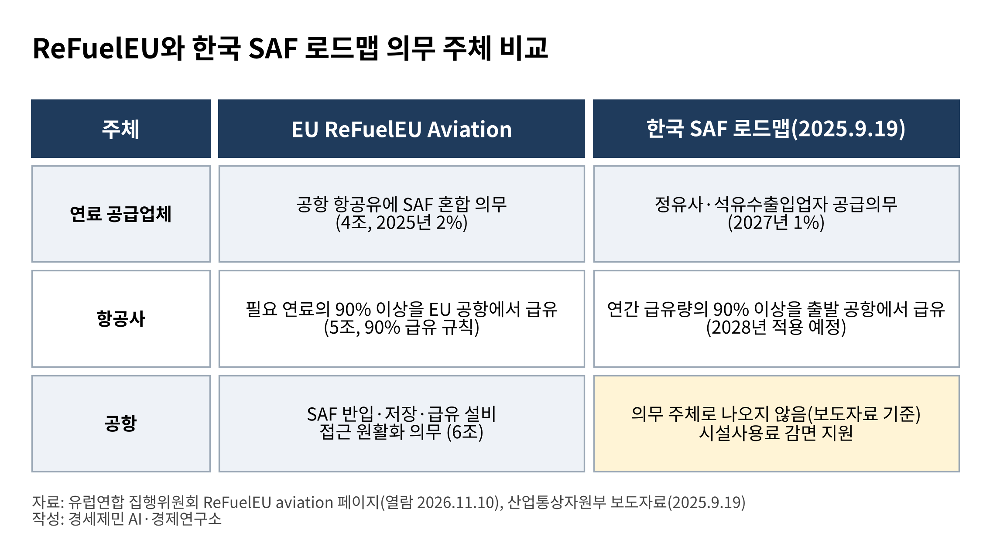

SAF 의무화 두 달 앞, 공항 급유시설 책임은 빈칸
EU는 공항에 저장·급유 접근 원활화 의무
인천공항 탱크 12기 120만배럴, 시험은 소규모
품질기준·2030년 비율 미정, 공항 책임 미기재
AI경제저널=김갑봉 기자 | 정부가 2027년부터 국내 공항 국제선에 공급하는 항공유의 1%를 지속가능항공유(SAF, 폐식용유 등으로 만든 항공유)로 채우는 의무를 시행한다. 의무를 지는 쪽은 정유사와 석유수출입업자다.
2028년부터는 항공사가 연간 급유량의 90% 이상을 출발 공항에서 넣어야 하고 그 항공유는 SAF 혼합유여야 한다. 이 급유의무는 국토교통부 소관이다.
로드맵 보도자료에서 공항 급유시설은 의무 주체로 나오지 않는다. (산업통상자원부)
산업통상자원부와 국토교통부가 2025년 9월 19일 낸 로드맵은 공급의무를 정유사 등에, 급유의무를 항공사에 둔다. 공항 쪽 항목은 의무가 아니라 시설사용료 감면 지원이다.
인천국제공항공사는 2025년 4월 국내산 SAF를 1% 이상 쓴 국제선 출발편에 2년간 총 5억원 한도로 시설사용료를 깎아 주기로 했다. 한국공항공사도 같은 기간 총 1억원을 지원한다.
정부는 2027년부터 이 감면을 항공사 직접 보조금으로 바꾸는 방안을 검토한다. (산업통상자원부·인천국제공항공사)

EU는 공항에도 접근 원활화 의무를 뒀다
EU는 같은 제도를 세 주체에 나눴다. 2025년부터 EU 공항 항공유의 2%를 SAF로 채워야 한다. 리퓨얼EU(ReFuelEU Aviation, EU 지속가능항공유 혼합 규정)에서 혼합 비율은 연료 공급업체가 맞춘다.
항공사는 필요한 연료를 출발 공항에서 넣어야 한다. 이른바 90% 급유 규칙이다. 한국 로드맵도 출발 공항 급유 비율로 90%를 쓴다.
공항은 SAF를 들여와 저장하고 급유하는 설비에 접근하기 쉽게 해야 한다. 규정 6조다. 혼합 비율을 공항이 지는 것은 아니다. (유럽연합 집행위원회)
에너지경제연구원은 2024년 9월 보고서에서 ReFuelEU 의무 대상에 연료 공급업체와 항공사, 공항 세 주체가 모두 들어간다고 정리했다. 한국 로드맵 보도자료에서 의무를 진 주체는 둘이다. 이는 두 자료를 견준 필자 정리다.
스위스도 2026년 1월 1일 이 규정을 채택해 취리히와 제네바 공항 연료 공급업체에 2% 혼합을 요구한다. (유럽연합 집행위원회)

인천공항 시설은 소규모 혼합 시험을 거쳤다
인천공항 급유시설은 항공유 저장탱크 12기와 급유전, 급유배관으로 이뤄진다. 탱크는 한 기에 10만배럴이라 모두 120만배럴이다(2023년 11월 기준).
공사는 이 시설을 2001년 개항 때 민자사업으로 지었고 2012년 인수했다고 설명했다. 운영은 민간 업체가 임대해 맡는다. (이데일리)
공사는 2022년부터 SAF 도입 연구용역을 했다. 한국뉴스는 공사가 기존 급유체계로 도입이 가능하다는 점을 확인했다고 전했다. (인천국제공항공사·한국뉴스)
2023년 9월 화물기 실증에는 SAF 2%를 섞은 연료와 보조탱크 1기를 썼다. 2024년 8월 30일에는 대한항공 인천~하네다 주 7편 가운데 1회가 SAF 1%를 섞은 연료로 운항했다. (한국뉴스·인천국제공항공사)
다만 이 시험은 1~2% 혼합에 주 1편 규모였다. 이투데이는 정부 추산으로 2027년 SAF 필요량이 외국 항공사 몫까지 합쳐 연 약 7만1000톤이라고 전했다.
2028년 급유의무까지 붙으면 시설이 받을 물량이 시험 단계와 달라질 가능성이 있다. 인천공항 몫은 공개된 자료에서 찾지 못했다. (이투데이)
품질기준과 2030년 비율이 아직 정해지지 않았다
이투데이는 정유사 등이 SAF를 생산하거나 조달해 기존 항공유와 혼합·공급하면 항공사가 급유하는 구조라고 정리했다. 이 구조에서 공항 시설은 혼합유를 받아 저장하고 내보내는 자리다.
로드맵 보도자료에는 이 구간의 설비 투자나 품질 확인 책임이 적혀 있지 않다. (산업통상자원부·이투데이)
이투데이 11월 3일 보도 기준으로 바이오항공유 품질기준은 발표가 미뤄졌다. 정부는 2026년 상반기까지 만들기로 했었다. 2026년 안에 확정하기로 한 2030년 의무비율도 10월 말까지 수치가 없다.
로드맵이 제시한 2030년 범위는 3~5%다. 정유업계 관계자는 3%인지 5%인지에 따라 필요한 생산능력이 달라진다고 말했다. (이투데이)
국제항공운송협회(IATA)는 2025년 세계 SAF 생산을 190만톤으로 전망했다. 전체 항공유 소비의 0.6%다. SAF 가격은 일반 항공유의 두 배 수준이고 의무 시장에서는 최대 다섯 배에 이른다고 밝혔다. (국제항공운송협회)
남은 쟁점은 세 가지다. 공항 시설이 혼합유를 받을 때 지는 책임을 정부가 로드맵 어디에 둘지가 첫째다. 품질을 누가 어떤 기준으로 확인할지가 둘째다.
공사와 정유사, 급유시설 운영사가 설비 일정을 어떻게 맞출지가 셋째다. 이 일정은 2030년 비율 확정에 달렸을 가능성이 높다. 공사와 정부 입장은 확인하지 못했다.
참고문헌
기관 자료
- 산업통상자원부, "국내 출발 항공편, 2027년부터 지속가능항공유(SAF)로 날아오른다", 보도자료, 2025.09.19. https://www.motir.go.kr/kor/article/ATCL3f49a5a8c/170934/view
- 인천국제공항공사, "인천공항공사, 지속가능항공유(SAF) 사용 확대를 위한 기념행사 개최", 보도자료, 2024.08.30. https://www.airport.kr/bbs/co_ko/84/132083/artclView.do
- 인천국제공항공사, "인천공항공사, 아시아 최초로 지속가능항공유(SAF) 인센티브 시행", 보도자료, 2025.04.30. https://www.airport.kr/bbs/co_ko/84/138701/artclView.do
- European Commission, "ReFuelEU aviation", Directorate-General for Mobility and Transport, 열람 2026.11.10. https://transport.ec.europa.eu/transport-modes/air/environment/refueleu-aviation_en
- IATA, "SAF Production Growth Rate is Slowing Down, Essential to Correct Course Ahead of e-SAF Mandates"(국문판 제목 「SAF 생산 증가율 둔화, e-SAF 의무화 시행에 앞서 방향 수정 필수」), 보도자료 2025-12-09-04, 2025.12.09. https://www.iata.org/en/pressroom/2025-releases/2025-12-09-04/
연구 보고서와 논문
- 에너지경제연구원, "주요국 지속가능항공유(SAF) 의무화제도 도입 개요와 시사점", 2024.09.11. https://eiec.kdi.re.kr/policy/domesticView.do?ac=0000187970
언론 보도
- 박민석, "SAF 의무화 두 달 앞…투자 기준도 지원책도 '안갯속'", 이투데이, 2026.11.03. https://www.etoday.co.kr/news/view/2641514
- 이종일, "인천공항, 항공기 급유시설 신규 사업자 입찰 개시", 이데일리, 2023.11.29. https://www.edaily.co.kr/News/Read?mediaCodeNo=257&newsId=02781446635810640
- 문병학, "인천공항공사, 기존 항공유 2% 혼합 '바이오항공유' 운항 실증...탈탄소 동참", 한국뉴스, 2023.09.06. https://www.24news.kr/news/articleView.html?idxno=209738
사진 출처
- 사진1 2026년 8월 22일. 김갑봉 촬영(구글 포토 보관 원본). 도표1 경세제민 AI·경제 연구소 작성.
※ 이 기사는 인공지능기자 위민아이(Wemin_AI)와 협력해 작성했습니다.
관련기사
저작권자 © AI경제저널 무단전재 및 재배포, AI학습 및 활용 금지